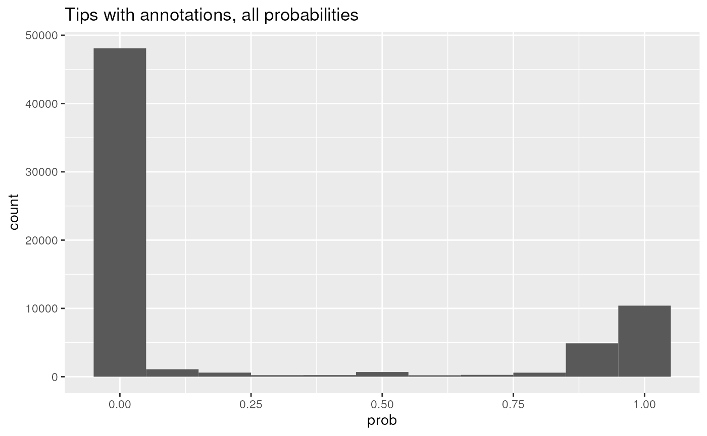
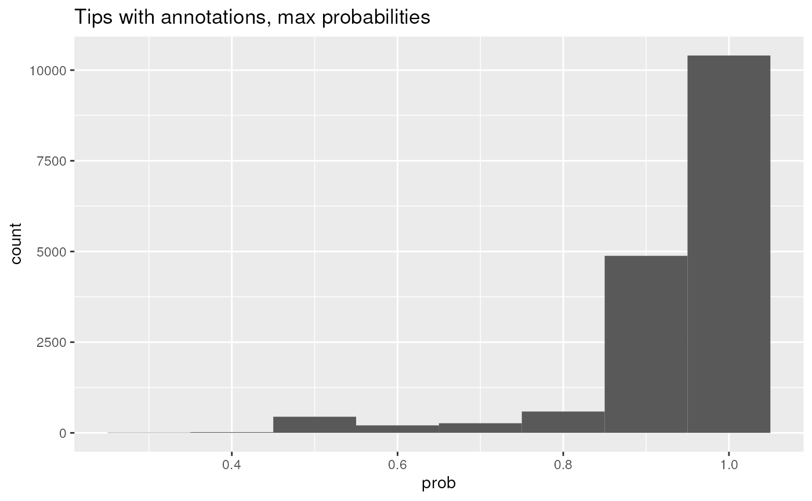
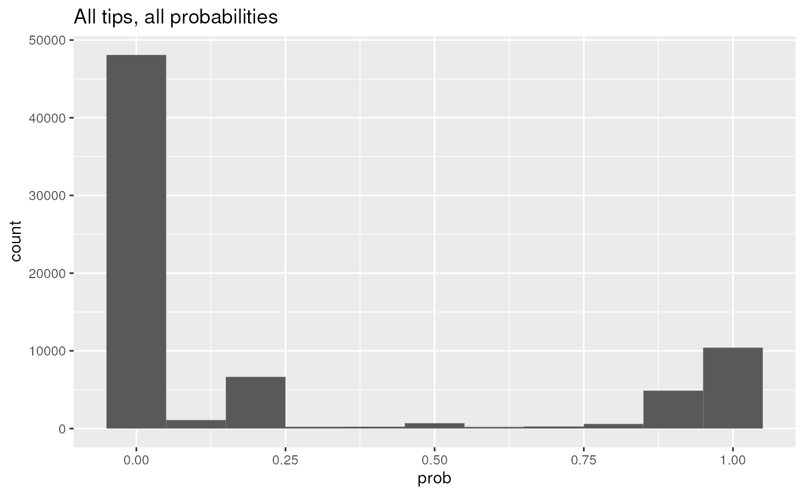
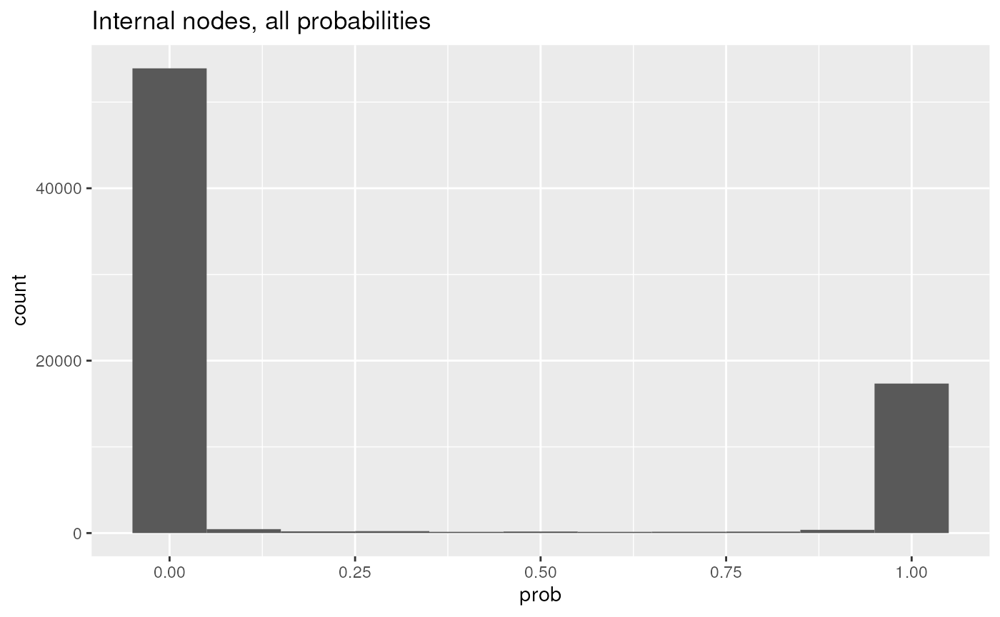
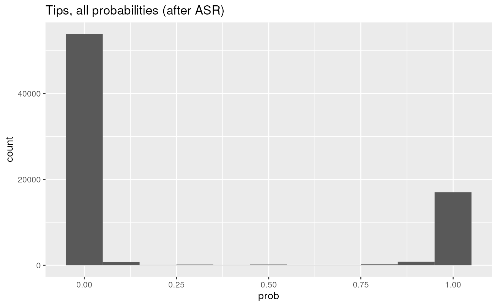
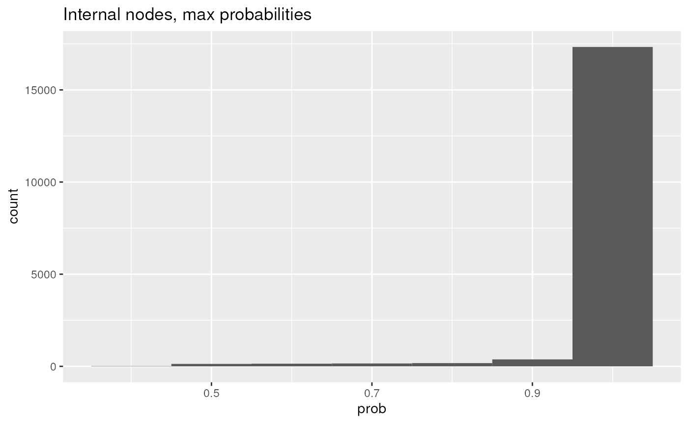
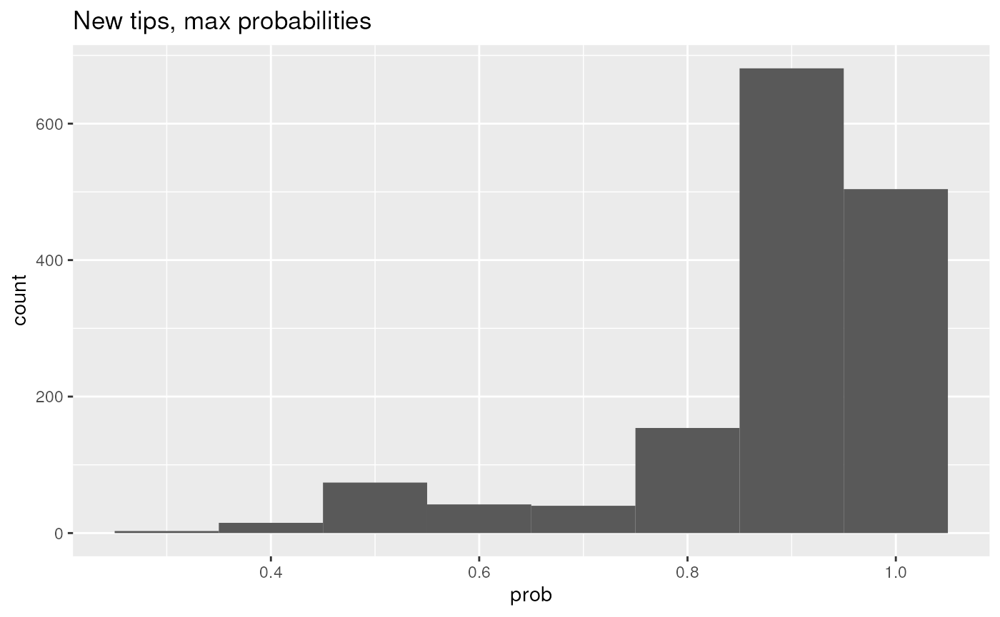

vignettes/articles/phytools.Rmd
phytools.Rmd
library(bugphyzz)
library(taxPPro)
library(data.tree)
library(phytools)
library(dplyr)
library(purrr)
library(tidyr)
library(ggplot2)
phys_name <- 'aerophilicity'
phys <- physiologies(phys_name)
select_cols <- c(
'NCBI_ID', 'Taxon_name', 'Parent_NCBI_ID',
'Attribute','Attribute_source', 'Confidence_in_curation',
'Frequency', 'Score', 'Evidence',
'Attribute_type', 'Attribute_group'
)
valid_ranks <- c('genus', 'species', 'strain')
attributes_fname <- system.file(
'extdata', 'attributes.tsv', package = 'bugphyzz'
)
attributes <- read.table(attributes_fname, sep = '\t', header = TRUE)
valid_attributes <- attributes |>
filter(attribute_group == phys_name) |>
pull(attribute) |>
unique()
phys_data <- phys[[1]] |>
as_tibble() |>
filter(Attribute_value == TRUE) |>
filter(Attribute %in% valid_attributes) |>
filter(
!((is.na(NCBI_ID) | NCBI_ID == 'unknown') & is.na(Parent_NCBI_ID))
) |>
filter(!is.na('Attribute_source'), !is.na('Frequency')) |>
mutate(Score = freq2Scores(Frequency)) |>
select(all_of(select_cols)) |>
distinct()
n_dropped_rows <- nrow(phys[[1]]) - nrow(phys_data)
message(format(n_dropped_rows, big.mark = ','), ' rows were dropped.')
#> 3,891 rows were dropped.Some variables that I need
Attribute_group_var <- unique(phys_data$Attribute_group)
Attribute_group_var
#> [1] "aerophilicity"
Attribute_type_var <- unique(phys_data$Attribute_type)
Attribute_type_var
#> [1] "multistate-intersection"
ordered_colnames <- c(
'NCBI_ID', 'Taxon_name', 'Rank',
'Attribute', 'Attribute_source', 'Confidence_in_curation',
'Evidence', 'Frequency', 'Score',
'Attribute_group', 'Attribute_type',
'taxid'
)Divide data in two sets between taxa with or without NCBI_ID:
lgl_vct <- is.na(phys_data$NCBI_ID) | phys_data$NCBI_ID == 'unknown'
set_with_ids <- phys_data |>
filter(!lgl_vct) |>
mutate(Rank = taxizedb::taxid2rank(NCBI_ID, db = 'ncbi')) |>
filter(Rank %in% valid_ranks) |>
mutate(Taxon_name = taxizedb::taxid2name(NCBI_ID, db = 'ncbi')) |>
distinct() |>
mutate(Confidence_in_curation = conf2Fct(Confidence_in_curation)) |>
group_by(NCBI_ID) |>
slice_max(Confidence_in_curation, n = 1, with_ties = TRUE) |>
ungroup() |>
group_by(NCBI_ID, Attribute) |>
slice_max(Attribute_source, n = 1, with_ties = FALSE) |>
ungroup() |>
group_by(NCBI_ID) |>
mutate(Total_score = sum(Score), Score = Score / Total_score) |>
ungroup() |>
mutate(Frequency = scores2Freq(Score)) |>
select(-Parent_NCBI_ID, -Total_score) |>
mutate(taxid = NCBI_ID) |>
mutate(NCBI_ID = addRankPrefix(NCBI_ID, Rank)) |>
filter(!is.na(NCBI_ID)) |>
distinct() |>
arrange(NCBI_ID, Attribute) |>
relocate(all_of(ordered_colnames))
#> Warning: There was 1 warning in `mutate()`.
#> ℹ In argument: `Rank = taxizedb::taxid2rank(NCBI_ID, db = "ncbi")`.
#> Caused by warning in `taxizedb::taxid2rank()`:
#> ! No rank found for 84 of 10425 taxon IDs. The followings are left unrankd: 65497, 287094, 196083, 136160, 513651, 1606016, 1646339, 126790, 1830421, 1400058, 165807, 134962, 48937, 263820, 1311788, 342610, 166934, 1398496, 307251, 219742, 154109, 1462563, 219741, 262776, 45461, 211759, 244407, 332057, 332056, 46170, 46170, 68202, 84593, 62153, 109214, 1398560, 355929, 866775, 1551, 1560, 86662, 168810, 495036, 1345697, 1166016, 741091, 195041, 140100, 62153, 675810, 65497, 861208, 340044, 335659, 546899, 656024, 440512, 147710, 931223, 420233, 332056, 68570, 68202, 563191, 665937, 469586, 469587, 665938, 469594, 52765, 52766, 699245, 97139, 327817, 644968, 228748, 477693, 652712, 796939, 796940, 36876, 93930, 220622, 1796653
dim(set_with_ids)
#> [1] 9609 12Get attribute annotations and scores for taxa without NCBI_ID from sources:
set_without_ids <- phys_data |>
filter(lgl_vct) |>
select(
-NCBI_ID, -Taxon_name, -Frequency
) |>
relocate(NCBI_ID = Parent_NCBI_ID) |>
mutate(Rank = taxizedb::taxid2rank(NCBI_ID, db = 'ncbi')) |>
filter(Rank %in% valid_ranks) |>
mutate(Taxon_name = taxizedb::taxid2name(NCBI_ID, db = 'ncbi')) |>
distinct() |>
mutate(Confidence_in_curation = conf2Fct(Confidence_in_curation)) |>
group_by(NCBI_ID) |>
slice_max(Confidence_in_curation, n = 1, with_ties = TRUE) |>
ungroup() |>
group_by(NCBI_ID, Attribute) |>
slice_max(Attribute_source, n = 1, with_ties = FALSE) |>
ungroup() |>
group_by(NCBI_ID) |>
mutate(Total_score = sum(Score), Score = Score / Total_score
) |>
mutate(Frequency = scores2Freq(Score)) |>
mutate(
Evidence = 'tax',
Attribute_group = Attribute_group_var,
Attribute_type = Attribute_type_var,
Attribute_source = NA,
Confidence_in_curation = NA
) |>
ungroup() |>
select(-Total_score) |>
mutate(taxid = NCBI_ID) |>
mutate(NCBI_ID = addRankPrefix(NCBI_ID, Rank)) |>
filter(!is.na(NCBI_ID)) |>
filter(!NCBI_ID %in% unique(set_with_ids$NCBI_ID)) |>
distinct() |>
arrange(NCBI_ID, Attribute) |>
relocate(all_of(ordered_colnames))
#> Warning: There was 1 warning in `mutate()`.
#> ℹ In argument: `Rank = taxizedb::taxid2rank(NCBI_ID, db = "ncbi")`.
#> Caused by warning in `taxizedb::taxid2rank()`:
#> ! No rank found for 5 of 15276 taxon IDs. The followings are left unrankd: 1765963, 2751472, 2679994, 1704088, 648567
dim(set_without_ids)
#> [1] 6502 12
ltp <- ltp()
#> Initial number of tips in LTP tree: 19452
#> Dropping 1038 tips with zero length branches.
#> Dropping 89 tips because of duplicated taxids.
#> Tips remaining: 18325
tree <- ltp$tree
tree
#>
#> Phylogenetic tree with 18325 tips and 18324 internal nodes.
#>
#> Tip labels:
#> AE006468-_Salmonella_enterica_subsp._enterica-_Bacteria-Pseudomonadota-Gammaproteobacteria-Enterobacterales-Enterobacteriaceae-Salmonella-_c-_type_sp., AF008580-_Salmonella_enterica_subsp._arizonae-_Bacteria-Pseudomonadota-Gammaproteobacteria-Enterobacterales-Enterobacteriaceae-Salmonella-_c, MK942857-_Klebsiella_indica-_Bacteria-Pseudomonadota-Gammaproteobacteria-Enterobacterales-Enterobacteriaceae-Klebsiella-_c, EU014680-_Salmonella_enterica_subsp._indica-_Bacteria-Pseudomonadota-Gammaproteobacteria-Enterobacterales-Enterobacteriaceae-Salmonella-_c, EU014684-_Salmonella_enterica_subsp._houtenae-_Bacteria-Pseudomonadota-Gammaproteobacteria-Enterobacterales-Enterobacteriaceae-Salmonella-_c, EU014685-_Salmonella_enterica_subsp._salamae-_Bacteria-Pseudomonadota-Gammaproteobacteria-Enterobacterales-Enterobacteriaceae-Salmonella-_c, ...
#> Node labels:
#> 2157, n19454, 2+48381, n19456, n19457, 200940+57723+533205, ...
#>
#> Rooted; includes branch lengths.
tip_data <- ltp$tip_data
dim(tip_data)
#> [1] 18325 14Annotations from sources than can be mapped to the NCBI tree:
ncbi_tree_nodes_gst <- ncbi_tree_nodes[which(grepl('^[gst]__', ncbi_tree_nodes))]
mean(phys_data_ready$NCBI_ID %in% ncbi_tree_nodes_gst)
#> [1] 0.9725829Proportion of NCBI tree nodes (gst) with annotations:
Annotations from sources than can me mapped to the phylogenetic tree tips:
Proportion of tips in the phylogenetic tree with annotations:
ncbi_tree$Do(function(node) {
if (node$name %in% names(phys_data_list)) {
node$attribute_tbl <- phys_data_list[[node$name]]
} else {
node$attribute_tbl <- NULL
}
})
## An example (E. coli):
ncbi_tree$k__2$p__1224$c__1236$o__91347$f__543$g__561$s__562$attribute_tbl
#> # A tibble: 4 × 12
#> NCBI_ID Attribute Taxon_name Rank Attribute_source Confidence_in_curation
#> <chr> <chr> <chr> <chr> <chr> <ord>
#> 1 s__562 aerobic Escherich… spec… Madin_2020 medium
#> 2 s__562 aerotolerant NA NA NA NA
#> 3 s__562 anaerobic NA NA NA NA
#> 4 s__562 facultativel… Escherich… spec… ProTraits medium
#> # ℹ 6 more variables: Evidence <chr>, Frequency <chr>, Score <dbl>,
#> # Attribute_group <chr>, Attribute_type <chr>, taxid <chr>
ncbi_attr_gst <- ncbi_tree$Get(
'attribute_tbl', filterFun = function(node) grepl('^[gst]__', node$name)
)
mean(!map_lgl(ncbi_attr_gst, ~ all(is.na(.x))))
#> [1] 0.2080126Removing annotations just to compare with result after taxonomic pooling
ncbi_tree$k__2$p__1224$c__1236$o__91347$f__543$g__561$attribute_tbl <- NULL
ncbi_tree$k__2$p__1224$c__1236$o__91347$f__543$g__561$attribute_tbl
#> NULLLest pool and normalize attribute scores at each taxonomic rank (gst) for child taxa
## ASR - post-order
taxPool <- function(node) {
if (!node$isLeaf) {
children_names <- names(node$children)
attribute_tbls <- children_names |>
purrr::map(~ node[[.x]]$attribute_tbl) |>
purrr::discard(is.null)
not_all_children_tbls_are_null <- length(attribute_tbls) > 0
node_attribute_tbl_is_null <- is.null(node$table)
node_is_gst <- grepl('^[gst]__', node$name)
conds <- node_attribute_tbl_is_null &
not_all_children_tbls_are_null &
node_is_gst
if (conds) {
res_tbl <- attribute_tbls |>
purrr::discard(is.null) |>
dplyr::bind_rows() |>
dplyr::select(
NCBI_ID, Attribute, Score
) |>
dplyr::mutate(
NCBI_ID = node$name,
taxid = node$taxid,
Taxon_name = node$Taxon_name,
Rank = node$Rank,
Evidence = 'tax',
Attribute_group = Attribute_group_var,
Attribute_type = Attribute_type_var
) |>
group_by(NCBI_ID) |>
mutate(
Total_score = sum(Score),
Score = Score / Total_score
) |>
ungroup() |>
select(-Total_score) |>
group_by(NCBI_ID, Attribute) |>
mutate(Score = sum(Score)) |>
ungroup() |>
distinct() |>
mutate(
Frequency = case_when(
Score == 1 ~ 'always',
Score > 0.9 ~ 'usually',
Score >= 0.5 ~ 'sometimes',
Score > 0 & Score < 0.5 ~ 'rarely',
Score == 0 ~ 'never'
)
) |>
mutate(
Attribute_source = NA,
Confidence_in_curation = NA
) |>
distinct()
node[['attribute_tbl']] <- res_tbl
}
}
}
ncbi_tree$Do(taxPool, traversal = 'post-order')
## Same E. coli example:
ncbi_tree$k__2$p__1224$c__1236$o__91347$f__543$g__561$attribute_tbl
#> # A tibble: 4 × 12
#> NCBI_ID Attribute Score taxid Taxon_name Rank Evidence Attribute_group
#> <chr> <chr> <dbl> <chr> <chr> <chr> <chr> <chr>
#> 1 g__561 aerobic 0.0598 561 Escherich… genus tax aerophilicity
#> 2 g__561 aerotolerant 0 561 Escherich… genus tax aerophilicity
#> 3 g__561 anaerobic 0.00427 561 Escherich… genus tax aerophilicity
#> 4 g__561 facultatively… 0.936 561 Escherich… genus tax aerophilicity
#> # ℹ 4 more variables: Attribute_type <chr>, Frequency <chr>,
#> # Attribute_source <lgl>, Confidence_in_curation <lgl>How many nodes family and above with attribute table? (it should be zero)
ncbi_attr_kpcof <- ncbi_tree$Get(
'attribute_tbl', filterFun = function(node) grepl('^[dpcor]__', node$name)
)
mean(!map_lgl(ncbi_attr_kpcof, ~ all(is.na(.x))))
#> [1] 0How many nodes genus and below with attribute table?
ncbi_attr_gst <- ncbi_tree$Get(
'attribute_tbl', filterFun = function(node) grepl('^[gst]__', node$name)
)
## A slight increase 12 to 15%
mean(!map_lgl(ncbi_attr_gst, ~ all(is.na(.x))))
#> [1] 0.2452853Child taxa of E. coli with unobserved annotations can inherit these values with a slight penalty:
## Inheritance - pre-order
inh1 <- function(node, adjF = 0.1) {
if (node$isRoot)
return(NULL)
if (is.null(node$parent$attribute_tbl))
return(NULL)
if (is.null(node$attribute_tbl) && grepl('^[st]__', node$name)) {
df <- node$parent$attribute_tbl
n <- nrow(df)
df <- df |>
dplyr::mutate(
target_scores = rep(1 / n, n),
score_diff = Score - target_scores,
Score = Score - adjF * score_diff,
NCBI_ID = node$name,
Evidence = 'inh',
Taxon_name = node$Taxon_name,
Rank = node$Rank,
taxid = node$taxid,
) |>
dplyr::select(-target_scores, -score_diff)
node$attribute_tbl <- df
}
}
ncbi_tree$Do(inh1, traversal = 'pre-order')Let’s look at one example of inheritance
inh_nodes1 <- ncbi_tree$Get(
'attribute_tbl',
simplify = FALSE,
filterFun = function(node) {
if (!is.null(node$attribute_tbl)) {
return('inh' %in% unique(node$attribute_tbl$Evidence))
} else {
return(FALSE)
}
})
inh_nodes1_subset <- inh_nodes1[map_int(inh_nodes1, nrow) > 1]
inh_nodes1_subset[['s__2588497']]
#> # A tibble: 4 × 12
#> NCBI_ID Attribute Score taxid Taxon_name Rank Evidence Attribute_group
#> <chr> <chr> <dbl> <chr> <chr> <chr> <chr> <chr>
#> 1 s__2588497 aerobic 0.588 2588… Noviherba… spec… inh aerophilicity
#> 2 s__2588497 aerotolerant 0.025 2588… Noviherba… spec… inh aerophilicity
#> 3 s__2588497 anaerobic 0.025 2588… Noviherba… spec… inh aerophilicity
#> 4 s__2588497 facultativel… 0.362 2588… Noviherba… spec… inh aerophilicity
#> # ℹ 4 more variables: Attribute_type <chr>, Frequency <chr>,
#> # Attribute_source <lgl>, Confidence_in_curation <lgl>
parent1 <- ncbi_tree$Get(
'attribute_tbl',
simplify = FALSE,
filterFun = function(node) {
node$name == 'g__1344552'
})
parent1[[1]]
#> # A tibble: 4 × 12
#> NCBI_ID Attribute Score taxid Taxon_name Rank Evidence Attribute_group
#> <chr> <chr> <dbl> <chr> <chr> <chr> <chr> <chr>
#> 1 g__1344552 aerobic 0.625 1344… Noviherba… genus tax aerophilicity
#> 2 g__1344552 aerotolerant 0 1344… Noviherba… genus tax aerophilicity
#> 3 g__1344552 anaerobic 0 1344… Noviherba… genus tax aerophilicity
#> 4 g__1344552 facultativel… 0.375 1344… Noviherba… genus tax aerophilicity
#> # ℹ 4 more variables: Attribute_type <chr>, Frequency <chr>,
#> # Attribute_source <lgl>, Confidence_in_curation <lgl>Proportion of nodes at the family level and above with attributes (it should be zero):
ncbi_attr_kpcof <- ncbi_tree$Get(
'attribute_tbl', filterFun = function(node) grepl('^[kpcor]__', node$name)
)
mean(!map_lgl(ncbi_attr_kpcof, ~ all(is.na(.x))))
#> [1] 0Proportion of nodes at the genus, species, and strain levels with attributes:
ncbi_attr_gst <- ncbi_tree$Get(
'attribute_tbl', filterFun = function(node) grepl('^[gst]__', node$name)
)
## Major increase 15 to 78%
mean(!map_lgl(ncbi_attr_gst, ~ all(is.na(.x))))
#> [1] 0.8215899The step above actually covered must of the genus, species, and strains, but this is one of the datasets with the most annotations, so it’s expected that most of the taxa would already be covered.
A formal ASR method would be nice, however.
Get new attributes:
new_attributes <- ncbi_attr_gst |>
discard(~ all(is.na(.x))) |>
bind_rows() |>
arrange(NCBI_ID, Attribute) |>
filter(!NCBI_ID %in% phys_data_ready$NCBI_ID) |>
mutate(taxid = sub('^\\w__', '', NCBI_ID)) |>
bind_rows(phys_data_ready)
table(new_attributes$Evidence)
#>
#> exp igc inh nas tas tax
#> 3829 1377 171008 918 3485 17562Now almost 90% of the tips have annotations:
new_tip_data <- left_join(tip_data, new_attributes, by = 'taxid')
table(new_tip_data$Evidence, useNA = 'always')
#>
#> exp igc inh nas tas tax <NA>
#> 1252 396 25100 156 2672 7496 1511Let’s create an input matrix for ASR with the phylogenetic tree
new_tip_data_completed <- new_tip_data |>
select(tip_label, Attribute, Score) |>
filter(!is.na(Attribute)) |>
complete(tip_label, Attribute, fill = list(Score = 0))
m1 <- new_tip_data_completed |>
# select(tip_label, Attribute, Score) |>
# filter(!is.na(Attribute)) |>
# complete(tip_label, Attribute, fill = list(Score = 0)) |>
pivot_wider(
names_from = 'Attribute', values_from = 'Score'
) |>
tibble::column_to_rownames(var = 'tip_label') |>
as.matrix()
no_annotated_tips <- new_tip_data |>
filter(!tip_label %in% rownames(m1)) |>
pull(tip_label) |>
unique()
m2 <- matrix(
data = rep(rep(1/ncol(m1), ncol(m1)), length(no_annotated_tips)),
nrow = length((no_annotated_tips)),
byrow = TRUE,
dimnames = list(rownames = no_annotated_tips, colnames = colnames(m1))
)
m3 <- rbind(m1, m2)
m3 <- m3[tree$tip.label,]
dim(m3)
#> [1] 18325 4Histogram of probabilites for tips with annotations
x <- m1
dim(x) <- NULL
data.frame(prob = x) |>
ggplot(aes(prob)) +
geom_histogram(binwidth = 0.1) +
ggtitle('Tips with annotations, all probabilities')
y <- as.double(apply(m1, 1, max))
data.frame(prob = y) |>
ggplot(aes(prob)) +
geom_histogram(binwidth = 0.1) +
ggtitle('Tips with annotations, max probabilities')
z <- m3
dim(z) <- NULL
data.frame(prob = z) |>
ggplot(aes(prob)) +
geom_histogram(binwidth = 0.1) +
ggtitle('All tips, all probabilities')
system.time({
fit <- fitMk(
tree = tree, x = m3, model = 'ER', pi = 'fitzjohn',
lik.func = 'pruning', logscale = TRUE
)
asr <- ancr(object = fit, tips = TRUE)
})
#> user system elapsed
#> 178.096 128.287 153.991
res <- asr$ace
node_rows <- length(tree$tip.label) + 1:tree$Nnode
rownames(res)[node_rows] <- tree$node.labelProbabilities of internal nodes
data.frame(prob = as.double(res[tree$node.label,])) |>
ggplot(aes(prob)) +
geom_histogram(binwidth = 0.1) +
ggtitle('Internal nodes, all probabilities')
Probabilities of tips
data.frame(prob = as.double(res[tree$tip.label,])) |>
ggplot(aes(prob)) +
geom_histogram(binwidth = 0.1) +
ggtitle('Tips, all probabilities (after ASR)')
maxRes <- unlist(apply(res, 1, max))
data.frame(prob = maxRes[tree$node.label]) |>
ggplot(aes(prob)) +
geom_histogram(binwidth = 0.1) +
ggtitle('Internal nodes, max probabilities')
data.frame(prob = maxRes[rownames(m2)]) |>
ggplot(aes(prob)) +
geom_histogram(binwidth = 0.1) +
ggtitle('New tips, max probabilities')
new_taxa_from_tips <- res[rownames(m2),] |>
as.data.frame() |>
tibble::rownames_to_column(var = 'tip_label') |>
left_join(tip_data, by = 'tip_label') |>
mutate(
Rank = taxizedb::taxid2rank(taxid, db = 'ncbi')
) |>
filter(Rank %in% c('genus', 'species', 'strain')) |>
mutate(
NCBI_ID = case_when(
Rank == 'genus' ~ paste0('g__', taxid),
Rank == 'species' ~ paste0('s__', taxid),
Rank == 'strain' ~ paste0('t__', taxid)
)
) |>
# rename(Taxon_name = taxname) |>
select(-ends_with('_taxid'), -tip_label, -taxid, -accession) |>
relocate(NCBI_ID, Taxon_name, Rank) |>
pivot_longer(
names_to = 'Attribute', values_to = 'Score', cols = 4:last_col()
) |>
mutate(
Evidence = 'asr',
Attribute_source = NA,
Confidence_in_curation = NA,
taxid = sub('\\w__', '', NCBI_ID),
Attribute_type = Attribute_type_var,
Attribute_group = Attribute_group_var,
Frequency = case_when(
Score == 1 ~ 'always',
Score > 0.9 ~ 'usually',
Score >= 0.5 ~ 'sometimes',
Score > 0 & Score < 0.5 ~ 'rarely',
Score == 0 ~ 'never'
)
)
head(new_taxa_from_tips)
#> # A tibble: 6 × 12
#> NCBI_ID Taxon_name Rank Attribute Score Evidence Attribute_source
#> <chr> <chr> <chr> <chr> <dbl> <chr> <lgl>
#> 1 s__2899544 Intestinirhabdus… spec… aerobic 0.0631 asr NA
#> 2 s__2899544 Intestinirhabdus… spec… aerotole… 0.00793 asr NA
#> 3 s__2899544 Intestinirhabdus… spec… anaerobic 0.00793 asr NA
#> 4 s__2899544 Intestinirhabdus… spec… facultat… 0.921 asr NA
#> 5 s__2799638 Tenebrionibacter… spec… aerobic 0.888 asr NA
#> 6 s__2799638 Tenebrionibacter… spec… aerotole… 0.0371 asr NA
#> # ℹ 5 more variables: Confidence_in_curation <lgl>, taxid <chr>,
#> # Attribute_type <chr>, Attribute_group <chr>, Frequency <chr>Most of these new taxa are in the NCBI tree:
ncbi_tree_nodes_empty <- ncbi_tree$Get(
'attribute_tbl', filterFun = function(node) {
is.null(node$attribute_tbl) || all(is.na(node$attribute_tbl))
}) |>
{\(y) names(y)}()
mean(new_taxa_from_tips$NCBI_ID %in% ncbi_tree_nodes_empty)
#> [1] 0.7801252Let’s check nodes
nodes_annotated <- res[which(grepl('^\\d+(\\+\\d+)*', rownames(res))),]
new_taxa_from_nodes <- nodes_annotated |>
as.data.frame() |>
tibble::rownames_to_column(var = 'NCBI_ID') |>
mutate(NCBI_ID = strsplit(NCBI_ID, '\\+')) |>
tidyr::unnest(NCBI_ID) |>
mutate(Rank = taxizedb::taxid2rank(NCBI_ID)) |>
mutate(Rank = ifelse(Rank == 'superkingdom', 'kingdom', Rank)) |>
mutate(
NCBI_ID = case_when(
Rank == 'kingdom' ~ paste0('k__', NCBI_ID),
Rank == 'phylum' ~ paste0('p__', NCBI_ID),
Rank == 'class' ~ paste0('c__', NCBI_ID),
Rank == 'order' ~ paste0('o__', NCBI_ID),
Rank == 'family' ~ paste0('f__', NCBI_ID),
Rank == 'genus' ~ paste0('g__', NCBI_ID),
Rank == 'species' ~ paste0('s__', NCBI_ID),
Rank == 'strain' ~ paste0('t__', NCBI_ID)
)
) |>
filter(
Rank %in% c(
'kingdom', 'phylum', 'class', 'order', 'family', 'genus',
'species', 'strain'
)
) |>
mutate(Evidence = 'asr') |>
relocate(NCBI_ID, Rank, Evidence) |>
pivot_longer(
cols = 4:last_col(), names_to = 'Attribute', values_to = 'Score'
) |>
mutate(
Attribute_source = NA,
Confidence_in_curation = NA,
Attribute_group = Attribute_group_var,
Attribute_type = Attribute_type_var,
taxid = sub('\\w__', '', NCBI_ID),
Taxon_name = taxizedb::taxid2name(taxid, db = 'ncbi'),
Frequency = case_when(
Score == 1 ~ 'always',
Score > 0.9 ~ 'usually',
Score >= 0.5 ~ 'sometimes',
Score > 0 & Score < 0.5 ~ 'rarely',
Score == 0 ~ 'never'
)
)
head(new_taxa_from_nodes)
#> # A tibble: 6 × 12
#> NCBI_ID Rank Evidence Attribute Score Attribute_source
#> <chr> <chr> <chr> <chr> <dbl> <lgl>
#> 1 k__2157 kingdom asr aerobic 0.0000127 NA
#> 2 k__2157 kingdom asr aerotolerant 0.0000122 NA
#> 3 k__2157 kingdom asr anaerobic 1.00 NA
#> 4 k__2157 kingdom asr facultatively anaerobic 0.0000122 NA
#> 5 k__2 kingdom asr aerobic 0.000180 NA
#> 6 k__2 kingdom asr aerotolerant 0.0000241 NA
#> # ℹ 6 more variables: Confidence_in_curation <lgl>, Attribute_group <chr>,
#> # Attribute_type <chr>, taxid <chr>, Taxon_name <chr>, Frequency <chr>Some new taxa can be added to the nodes with empty attribute table:
Actually most are already in the tree, but we got them through taxonomic binning (genus, species, and strains)
Prepare new taxa:
new_taxa_for_ncbi_tree <- new_taxa_from_tips |>
# select(-Taxon_name) |>
relocate(NCBI_ID, Rank, Attribute, Score, Evidence) |>
bind_rows(new_taxa_from_nodes)
new_taxa_for_ncbi_tree_list <- split(
new_taxa_for_ncbi_tree, factor(new_taxa_for_ncbi_tree$NCBI_ID)
)Let’s add some taxa to the tree:
ncbi_tree$Do(function(node) {
cond1 <- node$name %in% names(new_taxa_for_ncbi_tree_list)
cond2 <- is.null(node$attribute_tbl) || all(is.na(node$attribute_tbl))
if (cond1 && cond2) {
node$attribute_tbl <- new_taxa_for_ncbi_tree_list[[node$name]]
}
})How many are empty after this:
ncbi_tree_nodes_empty2 <- ncbi_tree$Get(
'attribute_tbl', filterFun = function(node) {
is.null(node$attribute_tbl) || all(is.na(node$attribute_tbl))
}) |>
{\(y) names(y)}()
length(ncbi_tree_nodes_empty2)
#> [1] 12747ASR and Inheritance one more time:
inh2 <- function(node, adjF = 0.1) {
cond1 <- !node$isRoot
cond2 <- is.null(node$attribute_tbl)
cond3 <- !is.null(node$parent$attribute_tbl)
if (cond1 && cond2 && cond3) {
tbl <- node$parent$attribute_tbl
n <- nrow(tbl)
res <- tbl |>
mutate(
target_scores = rep(1 / n, n),
score_diff = Score - target_scores,
Score = Score - adjF * score_diff,
NCBI_ID = node$name,
Evidence = 'inh2'
) |>
select(-target_scores, -score_diff) |>
relocate(NCBI_ID) |>
mutate(
Attribute_source = NA,
Confidence_in_curation = NA,
Attribute_group = Attribute_group_var,
Attribute_type = Attribute_type_var,
taxid = node$taxid,
Taxon_name = node$Taxon_name,
Rank = node$Rank,
Frequency = case_when(
Score == 1 ~ 'always',
Score > 0.9 ~ 'usually',
Score >= 0.5 ~ 'sometimes',
Score > 0 & Score < 0.5 ~ 'rarely',
Score == 0 ~ 'never'
)
)
node$attribute_tbl <- res
}
}
ncbi_tree$Do(taxPool, traversal = 'post-order')
ncbi_tree$Do(inh2, traversal = 'pre-order')How many are empty after this:
ncbi_tree_nodes_empty2 <- ncbi_tree$Get(
'attribute_tbl', filterFun = function(node) {
is.null(node$attribute_tbl) || all(is.na(node$attribute_tbl))
}) |>
{\(y) names(y)}()
## Only the root (ArcBac) remains empty
length(ncbi_tree_nodes_empty2)
#> [1] 1
ncbi_tree$k__2$p__1224$c__28211$o__356$f__335928$attribute_tbl
#> # A tibble: 4 × 12
#> NCBI_ID Rank Attribute Score Evidence Taxon_name Attribute_source
#> <chr> <chr> <chr> <dbl> <chr> <chr> <lgl>
#> 1 f__335928 family aerobic 1.00e+0 asr Xanthobac… NA
#> 2 f__335928 family aerotolerant 4.31e-8 asr Xanthobac… NA
#> 3 f__335928 family anaerobic 1.29e-6 asr Xanthobac… NA
#> 4 f__335928 family facultatively a… 9.88e-8 asr Xanthobac… NA
#> # ℹ 5 more variables: Confidence_in_curation <lgl>, taxid <chr>,
#> # Attribute_type <chr>, Attribute_group <chr>, Frequency <chr>Get all the tables
output <- ncbi_tree$Get(
attribute = 'attribute_tbl', simplify = FALSE,
filterFun = function(node) node$name != 'ArcBac'
)
output <- bind_rows(output)
head(output)
#> # A tibble: 6 × 12
#> NCBI_ID Rank Attribute Score Evidence Taxon_name Attribute_source
#> <chr> <chr> <chr> <dbl> <chr> <chr> <chr>
#> 1 k__2 kingdom aerobic 1.80e-4 asr Bacteria NA
#> 2 k__2 kingdom aerotolerant 2.41e-5 asr Bacteria NA
#> 3 k__2 kingdom anaerobic 1.00e+0 asr Bacteria NA
#> 4 k__2 kingdom facultatively an… 2.41e-5 asr Bacteria NA
#> 5 p__1224 phylum aerobic 8.46e-1 asr Pseudomon… NA
#> 6 p__1224 phylum aerotolerant 4.05e-4 asr Pseudomon… NA
#> # ℹ 5 more variables: Confidence_in_curation <ord>, taxid <chr>,
#> # Attribute_type <chr>, Attribute_group <chr>, Frequency <chr>Number of annotations per evidence
table(output$Evidence, useNA = 'always')
#>
#> asr exp igc inh inh2 nas tas tax <NA>
#> 7256 2586 294 168108 48200 895 1837 39514 33958NAs are the one that were completed with tidyr::complete, so all of them have score 0
Final annotations passing the min threshold (0.25 for aerophilicity)
min_thr <- 1 / length(unique(phys_data_ready$Attribute))
addTaxa1 <- phys_data_ready |>
filter(!NCBI_ID %in% unique(output$NCBI_ID))
addTaxa2 <- new_taxa_for_ncbi_tree|>
filter(!NCBI_ID %in% unique(output$NCBI_ID))
final_output <- bind_rows(list(output, addTaxa1, addTaxa2)) |>
filter(Score > min_thr)
dim(final_output)
#> [1] 88733 12
sessioninfo::session_info()
#> ─ Session info ───────────────────────────────────────────────────────────────
#> setting value
#> version R Under development (unstable) (2023-11-08 r85496)
#> os Ubuntu 22.04.3 LTS
#> system x86_64, linux-gnu
#> ui X11
#> language en
#> collate en_US.UTF-8
#> ctype en_US.UTF-8
#> tz Etc/UTC
#> date 2023-11-15
#> pandoc 3.1.1 @ /usr/local/bin/ (via rmarkdown)
#>
#> ─ Packages ───────────────────────────────────────────────────────────────────
#> package * version date (UTC) lib source
#> ape * 5.7-1 2023-03-13 [1] CRAN (R 4.4.0)
#> bit 4.0.5 2022-11-15 [1] CRAN (R 4.4.0)
#> bit64 4.0.5 2020-08-30 [1] CRAN (R 4.4.0)
#> blob 1.2.4 2023-03-17 [1] CRAN (R 4.4.0)
#> bold 1.3.0 2023-05-02 [1] CRAN (R 4.4.0)
#> bslib 0.5.1 2023-08-11 [1] CRAN (R 4.4.0)
#> bugphyzz * 0.0.1.4 2023-11-15 [1] Github (waldronlab/bugphyzz@10f0e88)
#> cachem 1.0.8 2023-05-01 [1] CRAN (R 4.4.0)
#> cli 3.6.1 2023-03-23 [1] CRAN (R 4.4.0)
#> clusterGeneration 1.3.8 2023-08-16 [1] CRAN (R 4.4.0)
#> coda 0.19-4 2020-09-30 [1] CRAN (R 4.4.0)
#> codetools 0.2-19 2023-02-01 [2] CRAN (R 4.4.0)
#> colorspace 2.1-0 2023-01-23 [1] CRAN (R 4.4.0)
#> combinat 0.0-8 2012-10-29 [1] CRAN (R 4.4.0)
#> conditionz 0.1.0 2019-04-24 [1] CRAN (R 4.4.0)
#> crayon 1.5.2 2022-09-29 [1] CRAN (R 4.4.0)
#> crul 1.4.0 2023-05-17 [1] CRAN (R 4.4.0)
#> curl 5.1.0 2023-10-02 [1] CRAN (R 4.4.0)
#> data.table 1.14.8 2023-02-17 [1] CRAN (R 4.4.0)
#> data.tree * 1.1.0 2023-11-12 [1] CRAN (R 4.4.0)
#> DBI 1.1.3 2022-06-18 [1] CRAN (R 4.4.0)
#> dbplyr 2.4.0 2023-10-26 [1] CRAN (R 4.4.0)
#> desc 1.4.2 2022-09-08 [1] CRAN (R 4.4.0)
#> digest 0.6.33 2023-07-07 [1] CRAN (R 4.4.0)
#> doParallel 1.0.17 2022-02-07 [1] CRAN (R 4.4.0)
#> dplyr * 1.1.3 2023-09-03 [1] CRAN (R 4.4.0)
#> evaluate 0.23 2023-11-01 [1] CRAN (R 4.4.0)
#> expm 0.999-7 2023-01-09 [1] CRAN (R 4.4.0)
#> fansi 1.0.5 2023-10-08 [1] CRAN (R 4.4.0)
#> farver 2.1.1 2022-07-06 [1] CRAN (R 4.4.0)
#> fastmap 1.1.1 2023-02-24 [1] CRAN (R 4.4.0)
#> fastmatch 1.1-4 2023-08-18 [1] CRAN (R 4.4.0)
#> foreach 1.5.2 2022-02-02 [1] CRAN (R 4.4.0)
#> fs 1.6.3 2023-07-20 [1] CRAN (R 4.4.0)
#> generics 0.1.3 2022-07-05 [1] CRAN (R 4.4.0)
#> ggplot2 * 3.4.4 2023-10-12 [1] CRAN (R 4.4.0)
#> glue 1.6.2 2022-02-24 [1] CRAN (R 4.4.0)
#> gtable 0.3.4 2023-08-21 [1] CRAN (R 4.4.0)
#> highr 0.10 2022-12-22 [1] CRAN (R 4.4.0)
#> hms 1.1.3 2023-03-21 [1] CRAN (R 4.4.0)
#> hoardr 0.5.3 2023-01-26 [1] CRAN (R 4.4.0)
#> htmltools 0.5.7 2023-11-03 [1] CRAN (R 4.4.0)
#> httpcode 0.3.0 2020-04-10 [1] CRAN (R 4.4.0)
#> igraph 1.5.1 2023-08-10 [1] CRAN (R 4.4.0)
#> iterators 1.0.14 2022-02-05 [1] CRAN (R 4.4.0)
#> jquerylib 0.1.4 2021-04-26 [1] CRAN (R 4.4.0)
#> jsonlite 1.8.7 2023-06-29 [1] CRAN (R 4.4.0)
#> knitr 1.45 2023-10-30 [1] CRAN (R 4.4.0)
#> labeling 0.4.3 2023-08-29 [1] CRAN (R 4.4.0)
#> lattice 0.22-5 2023-10-24 [2] CRAN (R 4.4.0)
#> lifecycle 1.0.4 2023-11-07 [1] CRAN (R 4.4.0)
#> magrittr 2.0.3 2022-03-30 [1] CRAN (R 4.4.0)
#> maps * 3.4.1.1 2023-11-03 [1] CRAN (R 4.4.0)
#> MASS 7.3-60.1 2023-11-09 [2] local
#> Matrix 1.6-2 2023-11-08 [2] CRAN (R 4.4.0)
#> memoise 2.0.1 2021-11-26 [1] CRAN (R 4.4.0)
#> mgsub 1.7.3 2021-07-28 [1] CRAN (R 4.4.0)
#> mnormt 2.1.1 2022-09-26 [1] CRAN (R 4.4.0)
#> munsell 0.5.0 2018-06-12 [1] CRAN (R 4.4.0)
#> nlme 3.1-163 2023-08-09 [2] CRAN (R 4.4.0)
#> numDeriv 2016.8-1.1 2019-06-06 [1] CRAN (R 4.4.0)
#> optimParallel 1.0-2 2021-02-11 [1] CRAN (R 4.4.0)
#> phangorn 2.11.1 2023-01-23 [1] CRAN (R 4.4.0)
#> phytools * 2.0-3 2023-11-09 [1] CRAN (R 4.4.0)
#> pillar 1.9.0 2023-03-22 [1] CRAN (R 4.4.0)
#> pkgconfig 2.0.3 2019-09-22 [1] CRAN (R 4.4.0)
#> pkgdown 2.0.7 2022-12-14 [1] CRAN (R 4.4.0)
#> purrr * 1.0.2 2023-08-10 [1] CRAN (R 4.4.0)
#> quadprog 1.5-8 2019-11-20 [1] CRAN (R 4.4.0)
#> R6 2.5.1 2021-08-19 [1] CRAN (R 4.4.0)
#> ragg 1.2.6 2023-10-10 [1] CRAN (R 4.4.0)
#> rappdirs 0.3.3 2021-01-31 [1] CRAN (R 4.4.0)
#> Rcpp 1.0.11 2023-07-06 [1] CRAN (R 4.4.0)
#> readr 2.1.4 2023-02-10 [1] CRAN (R 4.4.0)
#> rlang 1.1.2 2023-11-04 [1] CRAN (R 4.4.0)
#> rmarkdown 2.25 2023-09-18 [1] CRAN (R 4.4.0)
#> rprojroot 2.0.4 2023-11-05 [1] CRAN (R 4.4.0)
#> RSQLite 2.3.3 2023-11-04 [1] CRAN (R 4.4.0)
#> sass 0.4.7 2023-07-15 [1] CRAN (R 4.4.0)
#> scales 1.2.1 2022-08-20 [1] CRAN (R 4.4.0)
#> scatterplot3d 0.3-44 2023-05-05 [1] CRAN (R 4.4.0)
#> sessioninfo 1.2.2 2021-12-06 [1] CRAN (R 4.4.0)
#> stringi 1.8.1 2023-11-13 [1] CRAN (R 4.4.0)
#> stringr 1.5.0 2022-12-02 [1] CRAN (R 4.4.0)
#> systemfonts 1.0.5 2023-10-09 [1] CRAN (R 4.4.0)
#> taxize 0.9.100 2022-04-22 [1] CRAN (R 4.4.0)
#> taxizedb 0.3.1 2023-04-03 [1] CRAN (R 4.4.0)
#> taxPPro * 0.1.0 2023-11-15 [1] local
#> textshaping 0.3.7 2023-10-09 [1] CRAN (R 4.4.0)
#> tibble 3.2.1 2023-03-20 [1] CRAN (R 4.4.0)
#> tidyr * 1.3.0 2023-01-24 [1] CRAN (R 4.4.0)
#> tidyselect 1.2.0 2022-10-10 [1] CRAN (R 4.4.0)
#> tzdb 0.4.0 2023-05-12 [1] CRAN (R 4.4.0)
#> utf8 1.2.4 2023-10-22 [1] CRAN (R 4.4.0)
#> uuid 1.1-1 2023-08-17 [1] CRAN (R 4.4.0)
#> vctrs 0.6.4 2023-10-12 [1] CRAN (R 4.4.0)
#> vroom 1.6.4 2023-10-02 [1] CRAN (R 4.4.0)
#> withr 2.5.2 2023-10-30 [1] CRAN (R 4.4.0)
#> xfun 0.41 2023-11-01 [1] CRAN (R 4.4.0)
#> xml2 1.3.5 2023-07-06 [1] CRAN (R 4.4.0)
#> yaml 2.3.7 2023-01-23 [1] CRAN (R 4.4.0)
#> zoo 1.8-12 2023-04-13 [1] CRAN (R 4.4.0)
#>
#> [1] /usr/local/lib/R/site-library
#> [2] /usr/local/lib/R/library
#>
#> ──────────────────────────────────────────────────────────────────────────────